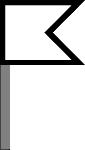

Signalbuch-Online
Signal Ro 4 – Fahnenschild
Ro 4
(1) Bedeutung
Kennzeichnung der Gleisseite, nach der beim Ertönen der Rottenwarnsignale Ro 2 und Ro 3 die Arbeitsgleise zu räumen sind.
Ro 4
(2) Beschreibung
Ein weißes Fahnenschild mit schwarzem Rand.

Ro 4
(3) Standplatz / Aufstellung
Das Signal ist in der Nähe der Arbeitsrotte gleichlaufend zum Gleis aufgestellt.